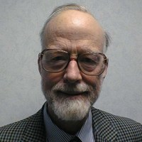

<div style='padding: 2%'></div>
<div>
<div style='display: inline-block; width: 200px;'>
  
</div>
<div style='display: inline-block; vertical-align: top'>
    <b>Tony Hoare</b>
    <ul><li>Quicksort, Hoare Logic, etc.</li>
        <li><strong>CSP</strong> - Communicating Sequential Processes (1978)</li>
        <li>Turing Award (1980)</li>
    </ul>
    <br/>
</div>
</div>
<div>
<div style='display: inline-block; width: 200px;'>
    
</div>
<div style='display: inline-block; vertical-align: top'>
    <b>Robin Milner</b>
    <ul><li>ML programming language, LCF, etc.</li>
        <li><strong>CCS</strong> - Calculus of Communicating Systems (1980)</li>
        <li><strong>&pi;-calculus</strong> (1992)
            <!--<ul><li><i>Channel passing</i>, e.g. <small><code>make(chan chan T)</code></small></li></ul>--></li>
        <li>Turing Award (1991)</li>
    </ul>
    <br/>
</div>
</div>
